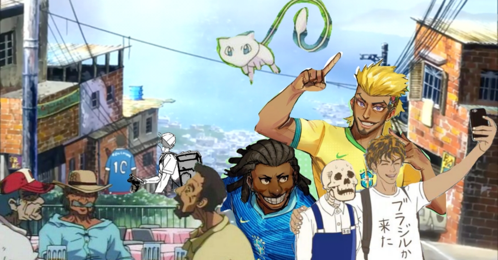

BEM-VINDO!
"ANI BR" é onde vamos falar um pouco sobre a cultura brasileira dentro de diversos animes separados por gêneros
A cultura japonesa é uma coisa fascinante e se torna ainda mais divertida quando é interligada à uma outra cultura, como acontece em alguns animes que mostram a cultura de diveras regiões do Brasil. Ainda que hoje em dia o Brasil tenha um apresença estereotipada dentro dos animes, é interessante perceber quando elementos como a capoeira, a caipirinha e até mesmo o vôlei brasileiro é representado e visto nos olhos das pessoas de outros países.
Esse site foi criado com o objetivo de demonstrar capacidade de compreensão em relação à matéria Métodos e Técnicas Aplicadas o Multilinguísmo (MTAM) do curso de Línguas Esrangeiras Aplicadas ao Multilinguísmo (LEA-MSI) do segundo semestre de 2025.